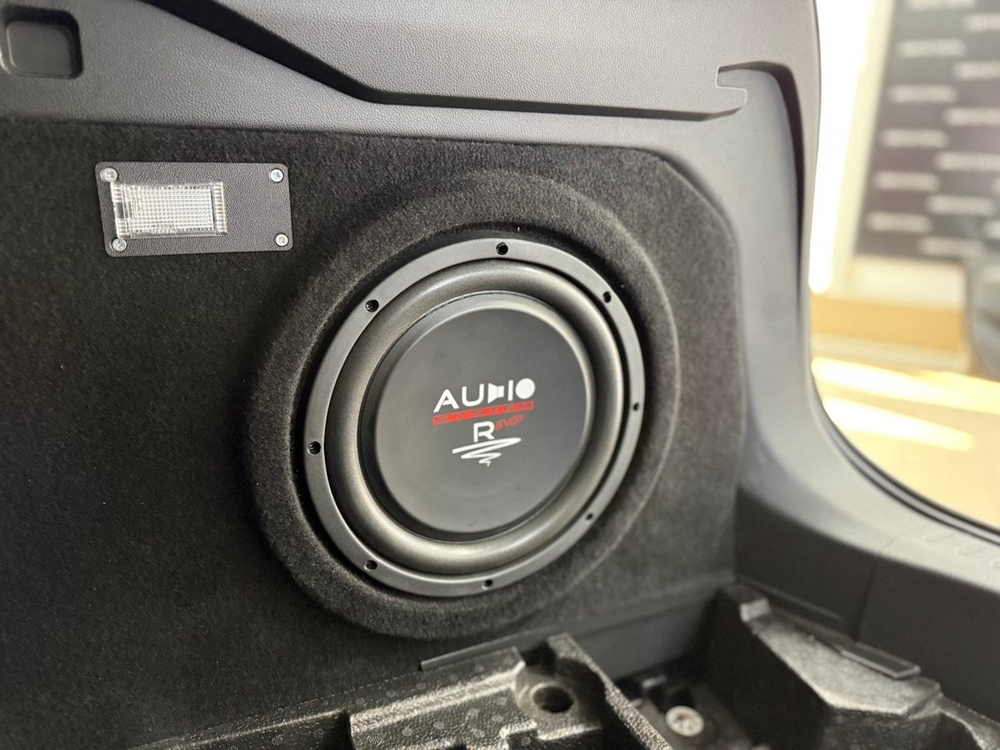
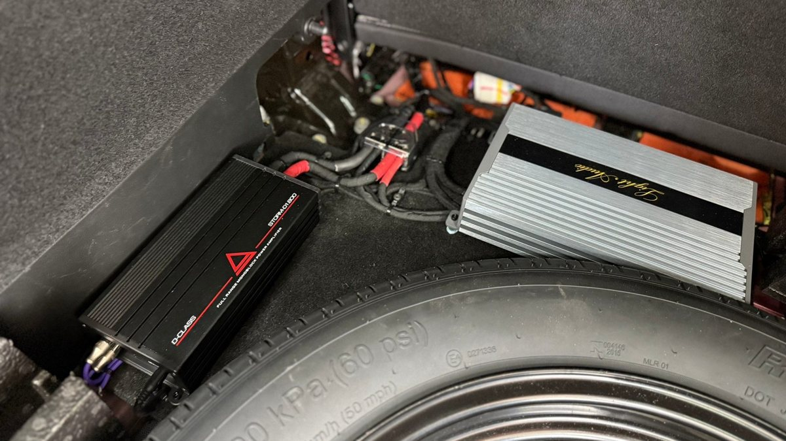
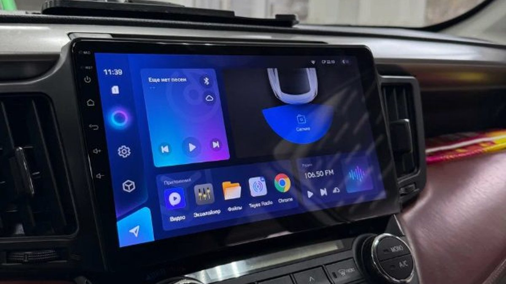

Вам нравится ваш штатный экран. В нём камера заднего вида, настройки машины, кнопки на руле работают как надо, всё родное и ничего не глючит. Одно плохо: музыка звучит плоско. Включаете любимый альбом по дороге с работы через Фрунзенский район, а низа просто нет, будто играет радио на кухне.
Знакомые советуют выкинуть штатную магнитолу и поставить андроид. А вам не хочется: экран вписан в панель, к нему привыкли руки, и терять функции машины ради баса кажется странной сделкой.
Менять голову не обязательно. Бас можно добавить к тому, что уже стоит.

Штатная система рассчитана на среднего пассажира и на экономию. Небольшие динамики в дверях физически не могут сыграть самые низкие ноты – не хватает размера и хода диффузора. Встроенный усилитель тоже скромный. Поэтому бас часто подрезают заранее, чтобы на громкости ничего не дребезжало. Результат вы и слышите.
Сабвуфер забирает этот нижний слой себе. Двери перестают надрываться, и даже штатные динамики начинают звучать спокойнее: им больше не нужно пытаться играть то, чего они не умеют.
У штатной магнитолы обычно нет отдельных выходов под усилитель, как у магнитол для доработки. Это не тупик. Многие усилители и активные сабвуферы принимают сигнал прямо с проводов динамиков – это называется высокоуровневый вход. Сигнал снимают со штатной проводки, экран остаётся на месте, руль и камера работают как раньше.
Если такого входа нет, ставят преобразователь уровня. Он встаёт между штатной проводкой и усилителем и переводит сигнал в нужный вид.
Важно, что в обоих случаях штатная проводка не режется вслепую: правильнее подключаться через переходники на родные разъёмы. Тогда систему при желании можно снять, и машина вернётся в заводской вид – это пригодится и при продаже.

В некоторых машинах сигнал на динамики уже обработан: бас срезан, эквалайзер подогнан под штатные колонки, количество баса меняется вместе с общей громкостью. Если просто снять такой сигнал и подать на сабвуфер, бас выйдет слабым или начнёт гулять от громкости. Тут помогает процессор: он выравнивает сигнал, и сабвуфер звучит как часть системы, а не как отдельная коробка в багажнике.
Ещё один момент – штатный усилитель. В части машин, особенно с фирменной акустикой в комплектации, он уже стоит отдельно, и подключаться приходится к нему. Это не проблема, но об этом лучше знать заранее, а не выяснять с разобранным салоном.
Если хочется просто вернуть низ и не потерять место, обычно хватает активного сабвуфера под сиденье или в нишу. Если бас для вас важен и хочется глубины – корпусной с отдельным усилителем, но он займёт часть багажника. Многие активные модели идут с выносным регулятором баса: его ставят у водителя, и бас можно убавить, когда сзади спит ребёнок, не залезая в меню.
Сфотографируйте экран и его меню звука, посмотрите в документах на машину, нет ли в комплектации фирменной акустики. Прикиньте, сколько места в багажнике вы готовы отдать.
Мы в Ярославле – студия «Автостиль», проспект Октября, 82б. Делаем под ключ: согласуем бюджет, подберём оборудование, установим и настроим. А если потом захочется больше или меньше баса, можно приехать и поменять настройки. Подробности – страница про автозвук, телефон +7 902 220-75-55.